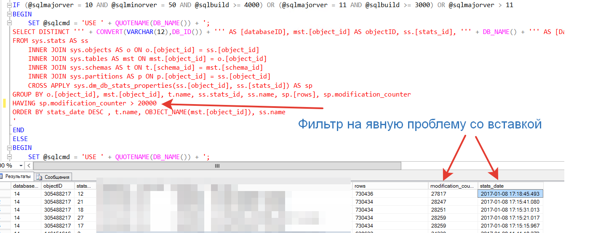
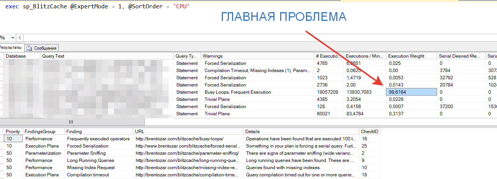

Приходя на проекты, где необходимы серьезные архитектурные решения, в прошлом году я столкнулся… Скажем, так - с завышенными ожиданиями от компетенций. То есть если вкратце – некоторые вещи, которые для нас представляют собой «базовые», для наших партнеров и друзей оказывались «открытием Америки». Почему так складывается? Лично моё предположение, что за счет огромного количества рутины – у большинства специалистов не хватает времени поднять голову и взглянуть на свою деятельность системно
Одним из таких моментов – является процесс «владения СУБД для 1С. Данная статья преследует своей целью:
Структура статьи будет иметь цветовую дифференциацию порядка работ.
Итак, начнем - предположим у Вас есть сервер MSSQL на котором у Вас размещена база 1С. Соответственно вы обязаны выполнить 4 последовательных этапа
Я преполагаю что:
Бордовые дни
Все что написано ниже – воспринимайте как чеклист. То есть правило следующее – сделать надо обязательно, если не доказано обратное. То есть это не рекомендация, которой можно следовать, а можно не следовать. Это прямые указания, отказаться от которых можно только в особых случаях
|
Что |
Как |
Объяснение |
|
Лимитирование лога ошибок |
Запись в реестре NumErrorLogs |
Предназначено для сокращения количества файлов «лога ошибок», чтобы исключить в продуктиве ошибки типа SQL Error Log Handle To Big |
|
Ограничение административных подключений только одним соединением |
Вызов хранимой процедуры с установкой параметра remote admin connections = 1 |
Убираем вероятность администрирования несколькими экспертами одного сервера, что чаще всего приводит к разрушению баз данных |
|
Включение сжатия по умолчанию для архивных копий если сервер не лимитирован по CPU |
Установка параметра backup compression default = 1, если версия MSSQL сервера не оптимизирована под лимитацию CPU |
Для версий старше 10-той, то есть SQL Server 2008 R2 – использование компрессии для архивный копий отличной от «по умолчанию» не рекомендуется. Попытка управлять этим значением может привести к артефактам в части блокировкам на уровне ресурсов CPU. |
|
Оптимизация под OLTP нагрузку |
Установка параметра optimize for ad hoc workloads = 1 |
Для OLTP и гибридных систем в которых идет постоянная вставка, этот параметр позволяет разделить построение планов запросов на 2 этапа – построение заглушки при первом вызове, и перекомпилирование реального плана при повторном вызове. |
|
Отключение параметров автоматического сжатия, автоматического закрытия соединений и способа проверки страницы данных |
Установка параметров SET AUTO_CLOSE OFF WITH NO_WAIT SET AUTO_SHRINK OFF WITH NO_WAIT SET PAGE_VERIFY CHECKSUM WITH NO_WAIT |
Чаще всего автоматическое сокращение базы и автоматическое закрытие соединений приводит к снижению производительности базы данных. Использование отличного от «CHECKSUM» способа проверки страниц, также ведет к снижению производительности. При наличии встроенных средств в 1С – другой вариант проверки считается избыточным |
|
Автоматическое создание и обновление статистики |
Установка параметров SET AUTO_CREATE_STATISTICS ON SET AUTO_UPDATE_STATISTICS ON |
В 2016 году признано всеми вендорами включая SAP – что ни одна из попыток ручного управления «статистикой» для оптимизации поиска не дала результатов. Поэтому по умолчанию всегда включаем ее автоматическое обновление. В купе с параметром оптимизации под OLTP нагрузку приводит к отсутствию артефактов связанным с избыточным чтением, при неправильно построенных запросах. |
|
Использование параллелизма |
Установка max degree of parallelism = 1 |
Самый холиварный параметр. Для 1С устанавливаем в «единицу», включение распараллеливания запросов возможно только если доказано наличие оптимального кода для управления блокировками и согласно мониторингу не было обнаружено «дедлоков». |
|
Использование памяти |
Установка параметра max server memory (MB) |
Используем этот скрипт – если коротко: максимальная память зависит от архитектуры процессоров, их количества, от количества рабочих процессов |
Ссылка на SQL скрипт:
Дополнительно – для перехода к ежедневному наблюдению за СУБД необходимо:
|
Что сделать |
Скрипт настройки |
|
Настроить агента рассылки, чтобы получать письма напрямую с SQL сервера, не дожидаясь оповещения с систем мониторинга |
Используем Вот этот SQL скрипт Заполняем параметры
|
|
Настроить специфичные ошибки SQL которые требуют немедленного реагирования |
Используем Вот этот скрипт Ошибки SQL сервера будут считаться со степенью важности – 10, то есть почти максимальные. |
Красная зона
Итак – вы настроили сервер СУБД и запустили в него пользователей. Чтобы перейти к сложным тюнингам, и сложным исследованиям – вам необходимо купировать массовые проблемы. Причем крайне желательно делать это максимально автоматизировано, чтобы больше никогда в «красную зону не возвращаться»
Обязательная скорость реакции DBA в течении 5 минут на следующие типы ошибок
|
Код ошибки |
Простое описание |
|
825 |
Проблемы с дисковым оборудованием – вероятность потерять данные не равна 0. И скорее всего означает что физическое разрушение данные уже началось. |
|
833 |
Низкая производительность дискового оборудования – фактически учитывая хорошее кеширование на стороне MSSQL означает что дисковая подсистема не справляется с той странной нагрузкой, которую вы дали своему серверу. Для 1С систем очень часто появляется в момент массовых загрузок в момент интеграции, когда загружаемые данные записываются массово. |
|
855 |
Очистка запланированных заданий не удалась – фактически для администратора это означает что кто-то изменил настройки его планов обслуживания. Ошибка связана с разделением прав на администрирование сервера. Требует внимания, так как если кто-то еще администрирует сервер – вероятность коллизий возрастает |
|
856 |
Нет возможности подключиться к административным представлениям, на основе которых сейчас чаще всего строится мониторинг. Это может быть вызвано проблемой с правами, а также нарушением работы самих административных представлений. Чаще всего, как и предыдущая – происходит, когда кто-то кроме Вас поковырялся в системных настройках. |
|
3452 |
При проверке архивной копии выявились некосистетные данные в таблице. Фактически вы должны понимать – что у Вас нет правильной архивной копии. И вы нормально не восстановите данные. |
|
3619 |
Кончилось место для лога транзакций. Обычно возникает когда неверно спланировали «усечение» лога транзакций» и выделенное под него место. |
|
17119 |
Выход за пределы лицензий на SQL сервер, связанная с количеством соединений. Фактически часть пользовательский соединений у вас не может прочитать данные. Очень похоже на превышение количества лицензий на 1С |
|
17883 |
Ошибка в SQL когда SQL не справляется с нагрузкой в части распределения между потоками и процессорным временем. Может быть багом SQL сервера, а может требовать снижения нагрузки и рефакторинга кода, вызывающего максимальную нагрузку на CPU |
|
17884 |
Дедлоки… Пошли дедлоки. Фактически показывает что ваша СУБД периодически встает в ступор. Очень часто связано с ошибкой установки MAX_DOP = 0. |
|
17887 |
Явный проблемы при работе с дисковой полкой. То есть когда у вас наблюдаются проблемы с низкоуровневым доступом к подсистеме ввода\вывода. Обычно возникает, когда неверные настройки проходят на уровне инфраструктуры. Microsoft рекомендует сразу обращаться на линию поддержки, потому как чаще всего это сложная проблема и требует исследования. В моем опыте почти всегда связана с не обновлённым BIOS на устройствах. |
|
17888 |
Еще дедлоки, обычно возникает рядом с 17883. Группа ошибок типа 17xxx вообще достаточно низкоуровневая, но на продуктивах в 1С возникает почти всегда. Мы используем для исправления вот эту статью. |
|
17890 |
Проблемы с памятью на инстансе MSSQL |
|
28036 |
Не работает репликация AlwaysOn – фактически означает что у вас нет сейчас высокодостпного кластера. Мы обычно называем эту ошибку «отказоустойчивый кластер отказал» |
Итак, если на Вашу почту не приходит оповещение об ошибках, указанных выше, теперь можно переходить к ежедневной проверке и контролю красных проблем.
Вообще в мире MSQL принято каждое событие нормировать параметром Severity (Серьезность)
Указанные выше ошибки считаются самыми серьёзными, однако – PFE инженеры и мы, подключаем еще одну группу ошибок к рассылке SQL агентом
|
Серьезность |
Коды ошибок |
|
16 |
2508, 2511, 3271, 5228, 5229, 5242, 5243, 5250, 5901, 17130, 17300 |
|
17 |
802, 845, 1101, 1105, 1121, 1214, 9002 |
|
19 |
701 |
|
20 |
3624 |
|
21 |
605 |
|
22 |
5180, 8966 |
|
23 |
5572, 9100 |
|
24 |
823, 824, 832 |
Описание ошибок – доступны в интернете, в том числе и на русском. Но чтобы вы могли искать описание этих ошибок автоматически, помимо автоматического скрипта создания рассылки email, нам понадобится автоматический определитель проблем, который покажет ссылки на описание ошибки и способа ее устранения. - скрипт берется отсюда
exec sp_Blitz @IgnorePrioritiesAbove = 50
Описание колонок вывода на русском:
|
Колонка |
Описание |
|
Priority |
Приоритет исправления |
|
Finding Group |
Группа ошибок |
|
Finding Name |
Наименование проверки |
|
Database Name |
Наименование базы данных |
|
URL |
Адрес описания проблемы |
|
Details |
Расшифровка проблемы |
|
QueryPlan |
План запроса подтверждающий проблему |
|
QueryPlanFilterd |
Плана запроса попавший в параметр отбора |
|
CheckID |
Идентификатор правила |
Смотреть вручную список проблем глупо – поэтому раз в сутки результат вывода направляется получателям на почту через вызов:
exec sp_Blitz @IgnorePrioritiesAbove = 50, @EmailRecipients = ‘dba.admins@ВашДомен.ру’
Вообще вам будет удобно понять параметры данный хранимой процедуры
|
Параметр |
Тип и назначение |
|
@IgnorePrioritiesAbove = X |
Число от 0 до 999, фильтрует проблемы по важности. |
|
@CheckUserDatabaseObjects = 0 |
Проверка осуществляется в контексте системной базы данных, а не пользовательской, что быстрей. Тип – маленькое число 1 или 0. |
|
@BringThePain = 0 |
«Причинять боль серверу» Тип – маленькое число 1 или 0. Предназначен для оценки сервера, на котором находятся более 50 баз данных, тогда выполнять анализ в контексте мастер базы может привести к деградации системных таблиц. |
|
@EmailRecipients = ‘…’ |
Список получателей результатов проверки, разделенный запятыми |
|
@EmailProfile = ‘’ |
Имя профиля SMTP для отправки оповещений |
Остальные параметры описаны тут и необходимы уже чаще всего в сложных анализах
Кстати – Как вы думаете сколько tempdb должно быть по умолчанию?.
А вы знаете что если ответить «одна», то это считается проблемой ;-).
Желтая зона
Итак – если вы уже НЕ получаете оповещений о проблемах серьезности выше чем 50. Кстати внимательный пользователь – запустивший у себя скрипты уже, наверное, знает, что проблемы отсутствующих индексов – это проблемы уровня 50. То есть если вы настроили правильно рассылку, то уже увидели то что у вас на продуктивной базе 1С их около 300 ;-). Это кстати классическое среднее число на активной базу 1С. Надеюсь вы уже воспользовались обработкой http://infostart.ru/public/439778/ для определения где и почему у вас отсутствующие индексы.
А мы вернемся к желтой зоне, она состоит из 5 этапов которые необходимо выполнить
|
Этап |
Способ осуществления |
|
Оценка состояния индексов |
USE <вашаБаза> exec sp_BlitzIndex @Mode = 4 |
|
Оценка состояния статистики |
exec view_Stats_Last_Update.sql |
|
Выявление главной проблемы по CPU |
exec sp_BlitzCache @ExpertMode = 1, @SortOrder = 'CPU' |
|
Выявление главное проблемы по RAM |
'
exec sp_BlitzCache @ExpertMode = 1, @SortOrder = 'memory grant' |
|
Выявление главной проблемы по чтению |
exec sp_BlitzCache @ExpertMode = 1, @SortOrder = 'reads' |
|
Выявление главной проблемы по записи |
exec sp_BlitzCache @ExpertMode = 1, @SortOrder = 'writes' |
Вам понадобится следующий комплект скриптов:
Методика выявления желтых проблем следующая:
Статистика
Визуально это выглядит так:

То есть если у вас есть таблицы с объемом модификаций выше 20.000 где статистика не обновлялась автоматически – эти таблицы добавляются в принудительное обновление статистики чаще чем раз в день. Планы обслуживания СУБД – тема отдельной статьи, однако для базовых вещей достаточно этой статьи на ИТС
Индексы – проблемы от 51 до 150 считаются желтыми».
Классические проблемы индексов:
Есть еще несколько классических проблем – но в целом подход к исправлению один и тот же.
Проблемы кэша
Последнее, но самое сложно по пониманию – это «желтые» проблемы работы с ресурсами. Вы должны понять следующее:
«Ни один запрос к СУБД не должен
превышать 25% от общей нагрузки на ресурс инфраструктуры»
Поэтому выполните следующие команды в консоле SQL:
|
exec sp_BlitzCache @ExpertMode = 1, @SortOrder = 'CPU' |
|
exec sp_BlitzCache @ExpertMode = 1, @SortOrder = 'memory grant' |
|
exec sp_BlitzCache @ExpertMode = 1, @SortOrder = 'reads' |
|
exec sp_BlitzCache @ExpertMode = 1, @SortOrder = 'writes' |
Найдите запрос который выполняет максимальную нагрузку по указанному ресурсу:

В колонке «План запроса» вы увидите главного «нагибателя» Вашей СУБД. Используя Инструменты разработчика - http://infostart.ru/public/15126/ вы быстро найдете примерный код в 1С который является проблемой. Рефакторинг 1С решений – это также тема отдельной статьи, но как показывает наша практика на 2016 год основными проблемами являются
Обычно, в 95% случае оценка кэша – выдает именно эти проблемы в запросах 1С. Ну и конечно массовая, не гранулярная вставка значений в регистры.
«После красно-желтых дней»
Если подытожить, то порядок работы следующий
В качестве заключения небольшой FAQ